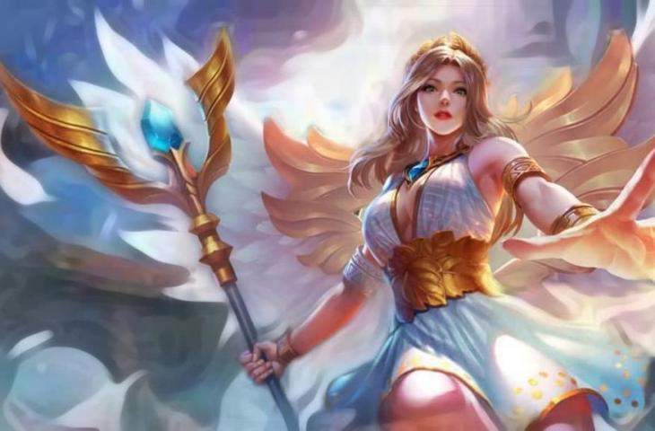

Rafaela

Hero cantik di Mobile Legends selanjutnya adalah Rafaela. Karakter ini berasal dari negeri Cendrawasih, Thien Cung. Rafeale juga diberkahi dengan kemampuan penyembuhan yang sangat ampuh.Sebagai hero Mobile Legends dengan role support, Rafaela juga memiliki banyak kostum menarik.
5 Tips GG Menggunakan Hero Rafaela
1. Pahami dulu 4 skill yang dimiliki oleh hero Rafaela

1. Skill pasif (Deity Penalization) Rafaela menghukum target yang membunuhnya, memberikan true damage yang setara dengan 20% dari Mak HP target.
2. Skill satu (Light of Retribution) Rafaela memberikan damage sebesar 225(+120% total magic power) kepada semua target yang ada didekatnya, menyebabkan efek slow sebesar 40% selama 1.5 detik. Damage skill ini akan meningkat sebesar 20% ketika mengenai target yang sama dalam lima detik.
3. Skill dua (Holy Healing) Rafaela memanggil Holy Light untuk meregenerasi HP mereka sebesar 370(+50% total magic power) dan meningkatkan movement speed sebesar 50% selama 1.5 detik.
4. Skill tiga (Holy Baptism) Rafaela memberikan Holy Light ke arah yang ditentukan, memberikan 460(+120% total magic power), menyebabkan efek stun selama 1.5 detik dan efek slow sebesar 40%.
2. Gunakan build terbaik ini agar Rafaela overpowered

Build adalah hal terpenting dalam permainan Mobile Legends sebab build sangat mempengaruhi performa hero yang kamu gunakan, percuma bisa main tapi gak salah dalam menggunakan susunan build, hero yang kamu gunakan akan menjadi lemah dan mudah untuk dikalahkan. Berikut ini adalah susunan build terbaik untuk hero Rafaela yang bisa kamu ikuti: Demon Shoes, Enchanted Talisman, Brute Force Breastplate, Courage Mask, Oracle dan Necklace of Durance. Dengan menggunakan susunan build di atas dijamin Rafaela akan menjadi overpowered
3. Permainan hero Rafaela di early game yang bisa kamu ikuti

Early game adalah waktu yang paling penting dalam permainan Mobile Legends, mampu bermain bagus di early game maka kemungkinan besar bisa dengan mudah memenangkan pertandingan. Hal pertama yang dilakukan oleh Rafaela ketika di early game adalah membeli item Roaming level satu yaitu Wooden Mask, hal ini agar hero core bisa cepat kaya.
4. Tips war menggunakan hero Rafaela.

Sebagai hero Support tentu saja Rafaela tidak boleh asal-asalan dalam melakukan war, tim bisa mengalami kekalahan apabila kamu bermain seenaknya. Berikut ini adalah beberapa tips war menggunakan hero Rafaela yang bisa kamu ikuti. Pertama yaitu berada di barisan paling depan saat sedang war, kamu tidak boleh ragu-ragu apalagi takut mati saat sedang war
5. Kesalahan fatal yang tidak boleh Rafaela lakukan

Tugas Rafaela sebagai hero Support adalah membantu dan melindungi hero core, membuka map dan juga meng-lock pergerakan hero lawan. Hero core bisa menjadi noob dan team war jadi lemah apabila Rafaela melakukan kesalahan fatal berikut ini. Pertama yaitu berdiam diri di satu lane, hal ini dapat menyebabkan hero side lane menjadi noob karena tidak ada yang membantunya saat sedang di-gang.